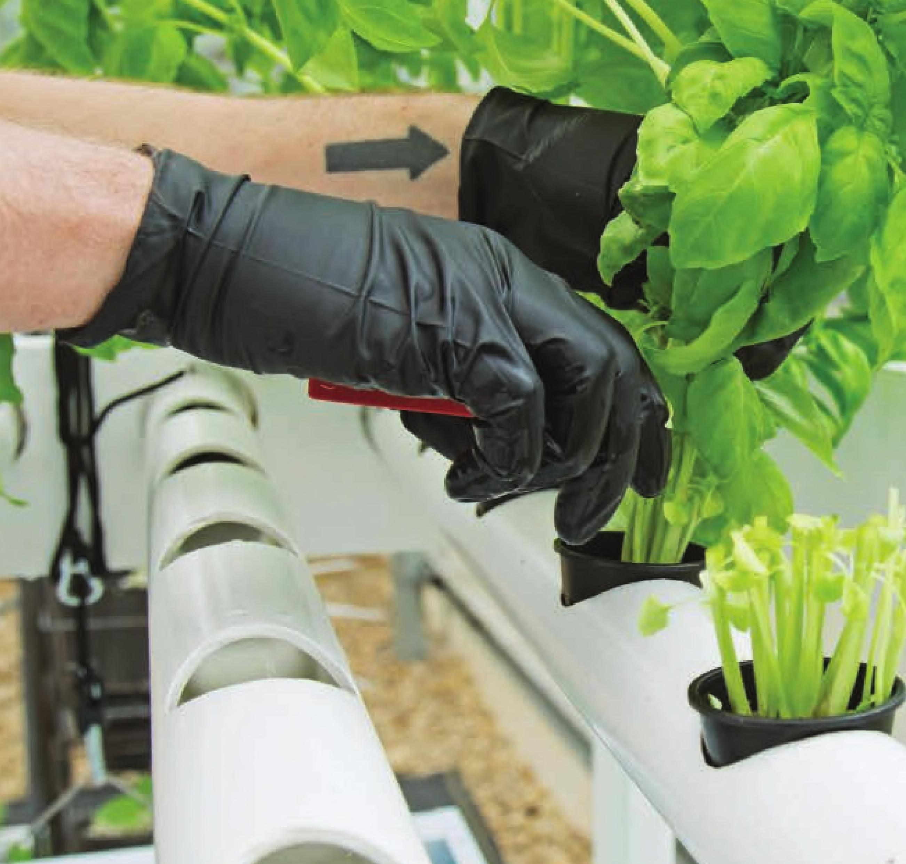

NFT systems are very popular for indoor growing because they are lightweight and water-efficient. • Suitable Locations: Indoors, outdoors, or greenhouse • Size: Medium to large • Growing Media: Stone wool • Electrical: Required • Crops: Leafy greens, herbs, and strawberries NUTRIENT FILM TECHNIQUE (NFT) Nutrient film technique (NFT) is a circulating hydroponic growing style that irrigates plants with a shallow stream of nutrient solution in growing channels. NFT is one of the most popular techniques for commercially growing leafy greens. One of the biggest advantages is the ability to grow a lot of plants on a small reservoir. NFT is very popular with rooftop growers because they can cover the entire roof in NFT channels using a small reservoir that won't exceed the load-carrying capacity of the roof. A gallon of water weighs 8.34 pounds . . . that means 240 gallons weighs over a ton! The weight of water can quickly add up. Many home gardeners may also be worried about heavy reservoirs, especially indoors. NFT is a very popular DIY hydroponic technique because it can be customized in so many ways. I've seen NFT channels arranged in cascading patterns on walls, in A-frame pyramids, and in spiraling coils. Some DIY NFT systems are more successful than others— it can be easy to let creative design take over and forget about the fundamentals that make an NFT garden successful. I encourage everyone to experiment, but first learn the potential limitations and nuances of NFT gardens so you can avoid costly mistakes. The success of your NFT garden will depend on crop selection, growing environment, channel length, channel slope, channel shape, and flow rate. HYDROPONIC GROWING SYSTEMS 69
